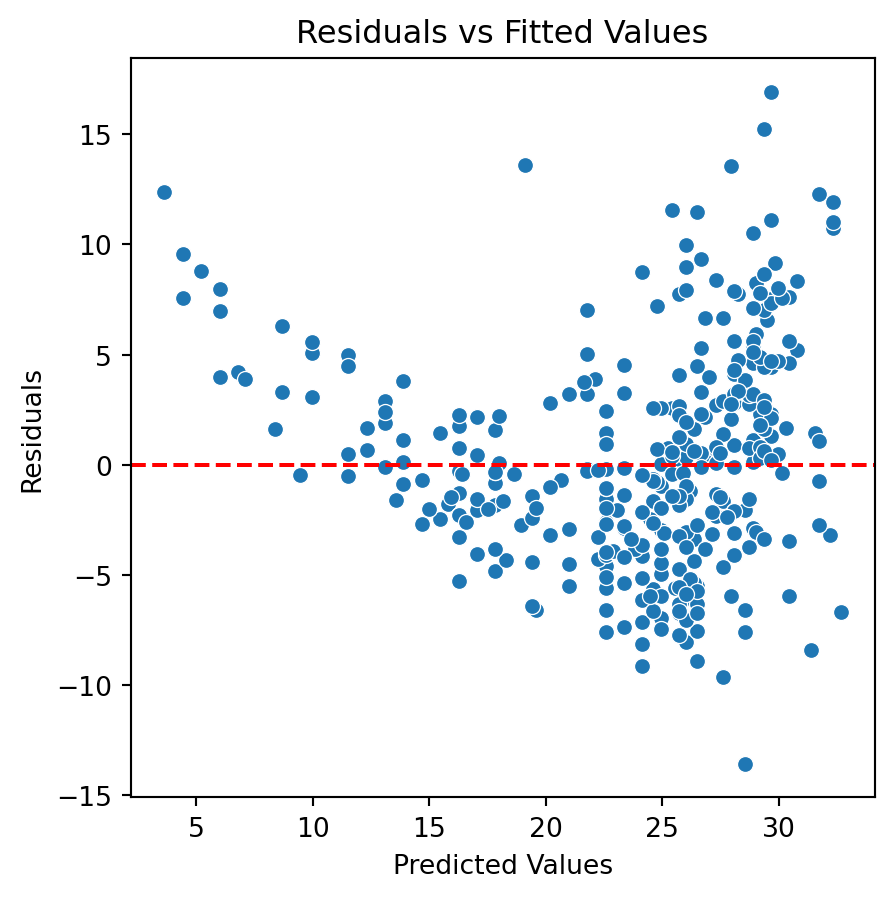
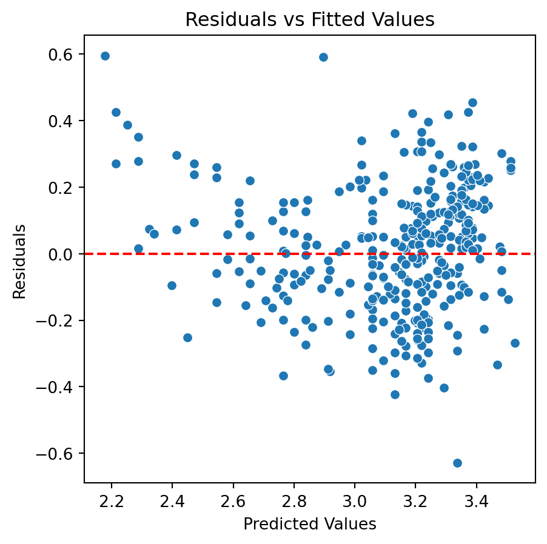
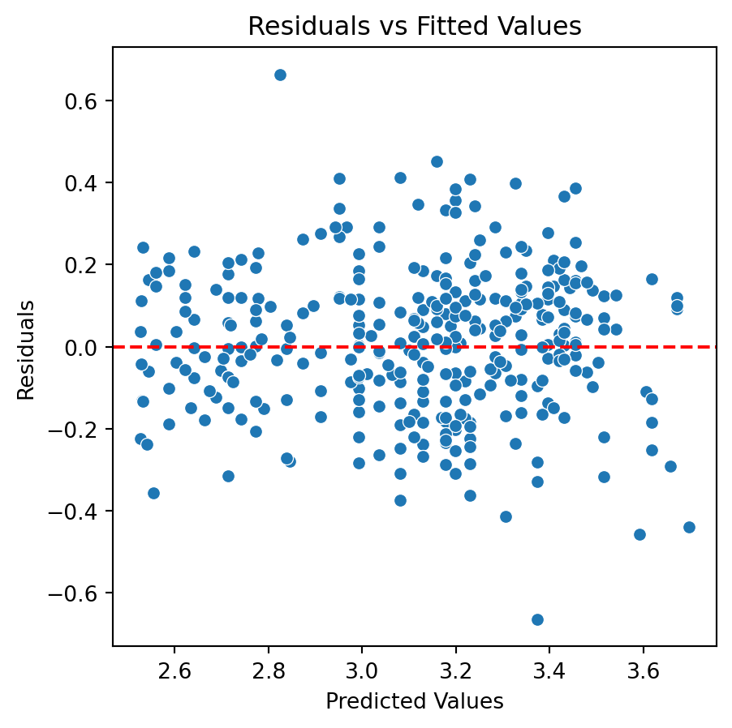

# Importing necessary libraries
import pandas as pd
import seaborn as sns
import matplotlib.pyplot as plt
import statsmodels.api as sm
from sklearn.preprocessing import StandardScaler
from sklearn.model_selection import train_test_split
from sklearn.metrics import mean_squared_errorAdditional Topics
IN5148: Statistics and Data Science with Applications in Engineering
Agenda
- Linear models with categorical variables
- Linear models with standardized numerical predictors
- Remedies for faulty assumptions
- Predicting future observations
Load the libraries
Let’s import scikit-learn into Python together with the other relevant libraries.
We will not use all the functions from the scikit-learn library. Instead, we will use specific functions from the sub-libraries preprocessing, model_selection, and metrics.
Linear models with categorical predictors
Categorical predictors
- A categorical predictor takes on values that are categories, say, names or labels.
- Their use in regression requires dummy variables, which are quantitative variables.
- When a categorical predictor has more than two levels, a single dummy variable cannot represent all possible categories.
- In general, a categorical predictor with \(k\) categories requires \(k-1\) dummy variables.
Dummy coding
Traditionally, dummy variables are binary variables which can only take the values 0 and 1.
This approach implies a reference category. Specifically, the category that results when all dummy variables equal 0.
This coding impacts the interpretation of the model coefficients:
- \(\beta_0\) is the mean response under the reference category.
- \(\beta_j\) is the amount of increase in the mean response when we change from the reference category to another category.
Example 1
The auto data set includes a categorical variable “Origin” which shows the origin of each car.
# Load the Excel file into a pandas DataFrame.
auto_data = pd.read_excel("auto.xlsx")
# Set categorical variables.
auto_data['origin'] = pd.Categorical(auto_data['origin'])In this section, we will consider the auto_data as our training dataset.
Dataset
(auto_data
.filter(['mpg', 'origin'])
).head(6)| mpg | origin | |
|---|---|---|
| 0 | 18.0 | American |
| 1 | 15.0 | American |
| 2 | 18.0 | American |
| 3 | 16.0 | American |
| 4 | 17.0 | American |
| 5 | 15.0 | American |
Dummy variables
Origin has 3 categories: European, American, Japanese.
So, 2 dummy variables are required:
\[d_1 = \begin{cases} 1 \text{ if car is European}\\ 0 \text{ if car is not European} \end{cases} \text{ and }\]
\[d_2 = \begin{cases} 1 \text{ if car is Japanese}\\ 0 \text{ if car is not Japanese} \end{cases}.\]
“American” acts as the reference category.
The dataset with the dummy variables looks like this:
| origin | \(d_1\) | \(d_2\) |
|---|---|---|
| American | 0 | 0 |
| American | 0 | 0 |
| European | 1 | 0 |
| European | 1 | 0 |
| American | 0 | 0 |
| Japanese | 0 | 1 |
| \(\vdots\) | \(\vdots\) | \(\vdots\) |
The multiple linear regression model
\[Y_i= \beta_0+\beta_1 d_{1i} +\beta_2 d_{2i} +\epsilon_i \ \text{for} \ i=1,\ldots,n.\]
- \(Y_i\) is the i-th response.
- \(d_{1i}\) is 1 if the i-th observation is from a European car, and 0 otherwise.
- \(d_{2i}\) is 1 if the i-th observation is from a Japanese car, and 0 otherwise.
Model coefficients
\[Y_i= \beta_0+\beta_1 d_{1i} +\beta_2 d_{2i} +\epsilon_i \ \text{for} \ i=1,\ldots,n.\]
- \(\beta_0\) is the mean response (mpg) for American cars.
- \(\beta_1\) is the amount of increase in the mean response when changing from an American to a European car.
- \(\beta_2\) is the amount of increase in the mean response when changing from an American to a Japanese car.
- \(\epsilon_i\)’s follow the same assumptions as before.
Alternatively, we can write the regression model as:
\[Y_i= \beta_0+\beta_1 d_{1i} +\beta_2 d_{2i} +\epsilon_i = \begin{cases} \beta_0+\beta_1 +\epsilon_i \text{ if car is European}\\ \beta_0+\beta_2 +\epsilon_i \text{ if car is Japanese} \\ \beta_0 +\epsilon_i\;\;\;\;\;\;\ \text{ if car is American} \end{cases}\]
Given this model representation:
- \(\beta_0\) is the mean mpg for American cars,
- \(\beta_1\) is the difference in the mean mpg between European and American cars, and
- \(\beta_2\) is the difference in the mean mpg between Japanese and American cars.
In Python
We follow three steps to fit a linear model with a categorical predictor. First, we compute the dummy variables.
# Create linear regression object
dummy_data = pd.get_dummies(auto_data['origin'], drop_first = True,
dtype = 'int')Next, we construct the response column and matrix of predictors with the intercept.
# Create response vector
Y_train = auto_data['mpg']
# Create matrix of predictors with intercept
dummy_X_train = sm.add_constant(dummy_data)Finally, we fit the model using OLS() and fit() from statsmodels.
# Create linear regression object
regr = sm.OLS(Y_train, dummy_X_train)
# Train the model using the training sets
linear_model = regr.fit()
# Summary of the models.
summary_model = linear_model.summary()print(summary_model) OLS Regression Results
==============================================================================
Dep. Variable: mpg R-squared: 0.332
Model: OLS Adj. R-squared: 0.328
Method: Least Squares F-statistic: 96.60
Date: Wed, 21 Jan 2026 Prob (F-statistic): 8.67e-35
Time: 09:28:36 Log-Likelihood: -1282.2
No. Observations: 392 AIC: 2570.
Df Residuals: 389 BIC: 2582.
Df Model: 2
Covariance Type: nonrobust
==============================================================================
coef std err t P>|t| [0.025 0.975]
------------------------------------------------------------------------------
const 20.0335 0.409 49.025 0.000 19.230 20.837
European 7.5695 0.877 8.634 0.000 5.846 9.293
Japanese 10.4172 0.828 12.588 0.000 8.790 12.044
==============================================================================
Omnibus: 26.330 Durbin-Watson: 0.763
Prob(Omnibus): 0.000 Jarque-Bera (JB): 30.217
Skew: 0.679 Prob(JB): 2.74e-07
Kurtosis: 3.066 Cond. No. 3.16
==============================================================================
Notes:
[1] Standard Errors assume that the covariance matrix of the errors is correctly specified.Analysis of covariance
Models that mix categorical and numerical predictors are sometimes referred to as analysis of covariance (ANCOVA) models.
Example (cont): Consider the predictor weight (\(X\)).
\[Y_i= \beta_0+\beta_1 d_{1i} +\beta_2 d_{2i} + \beta_3 X_{i} +\epsilon_i,\]
where \(X_i\) denotes the i-th observed value of weight and \(\beta_3\) is the coefficient of this predictor.
ANCOVA model
The components of the ANCOVA model are individual functions of the coefficients.
To gain insight into the model, we write it as follows:
\[ \begin{align} Y_i &= \beta_0+\beta_1 d_{1i} +\beta_2 d_{2i} + \beta_3 X_{i} +\epsilon_i \\ &= \begin{cases} (\beta_0+\beta_1) + \beta_3 X_{i} +\epsilon_i \text{ if car is European} \\ (\beta_0+\beta_2) + \beta_3 X_{i} +\epsilon_i \text{ if car is Japanese} \\ \beta_0 + \beta_3 X_{i} +\epsilon_i\;\;\;\;\;\;\;\;\ \text{ if car is American} \end{cases}. \end{align} \]
Note that these models have different intercepts but the same slope.
- To estimate \(\beta_0\), \(\beta_1\), \(\beta_2\) and \(\beta_3\), we use least squares. To estimate \(\sigma^2\), we use the mean squared error (MSE).
- We could make individual inferences on \(\beta_1\) and \(\beta_2\) using t-tests and confidence intervals.
- However, better tests are possible such as overall and partial F-tests (not discussed here).
In Python
To fit an ANCOVA model, we use similar steps as before. The only extra step is to concatenate the data with the dummy variables and the numerical predictor using the function concat() from pandas.
# Concatenate the two data sets.
X_train = pd.concat([dummy_X_train, auto_data['weight']], axis = 1)
# Create linear regression object
regr = sm.OLS(auto_data['mpg'], X_train)
# Train the model using the training sets
ancova_model = regr.fit()Model summary
# Summary of the models.
summary_ancova = ancova_model.summary()
print(summary_ancova) OLS Regression Results
==============================================================================
Dep. Variable: mpg R-squared: 0.702
Model: OLS Adj. R-squared: 0.700
Method: Least Squares F-statistic: 304.7
Date: Wed, 21 Jan 2026 Prob (F-statistic): 1.28e-101
Time: 09:28:36 Log-Likelihood: -1123.9
No. Observations: 392 AIC: 2256.
Df Residuals: 388 BIC: 2272.
Df Model: 3
Covariance Type: nonrobust
==============================================================================
coef std err t P>|t| [0.025 0.975]
------------------------------------------------------------------------------
const 43.7322 1.113 39.277 0.000 41.543 45.921
European 0.9709 0.659 1.474 0.141 -0.324 2.266
Japanese 2.3271 0.665 3.501 0.001 1.020 3.634
weight -0.0070 0.000 -21.956 0.000 -0.008 -0.006
==============================================================================
Omnibus: 40.731 Durbin-Watson: 0.832
Prob(Omnibus): 0.000 Jarque-Bera (JB): 61.938
Skew: 0.689 Prob(JB): 3.55e-14
Kurtosis: 4.377 Cond. No. 1.83e+04
==============================================================================
Notes:
[1] Standard Errors assume that the covariance matrix of the errors is correctly specified.
[2] The condition number is large, 1.83e+04. This might indicate that there are
strong multicollinearity or other numerical problems.Linear models with standardized predictors
Standardization
Standardization refers to centering and scaling each numeric predictor individually.
To center a predictor variable, the average predictor value is subtracted from all the values.
To scale a predictor, each of its value is divided by its standard deviation.
In mathematical terms, we standardize a predictor \(X\) as:
\[{\color{blue} \tilde{X}_{i}} = \frac{{ X_{i} - \bar{X}}}{ \sqrt{\frac{1}{n -1} \sum_{i=1}^{n} (X_{i} - \bar{X})^2 }} \text{ with } \bar{X} = \sum_{i=1}^n \frac{X_i}{n}.\]
The average value of \(\tilde{X}\) is 0.
The standard deviation of \(\tilde{X}\) is 1.
Benefits and limitations
Benefits:
- All quantitative predictors are on the same scale.
- Size and importance of linear regression coefficients can be compared easily.
. . .
Limitations:
- The interpretation of the coefficients is affected.
Interpretation
\[Y = \beta_0 + \beta_1 \tilde{X}_1 + \beta_2 \tilde{X}_2 + \cdots + \beta_p \tilde{X}_p + \epsilon,\]
where \(\tilde{X}_i\) is the standardized version of the predictor \(X_i\).
Interpretation:
- \(\beta_0\) is the mean response when all original predictors \(X_1, X_2, \ldots, X_p\) are set to their average value.
- \(\beta_j\) is the amount of increase in the mean response by an increase of 1 standard deviation in the original predictor \(X_j,\) when all other predictors are fixed to an arbitrary value.
Example 2
The yield of a chemical process (\(Y\)) is related to the concentration of the reactant (\(X_1\)) and the operating temperature (\(X_2\)).
An experiment was conducted to study the effect between these factors on the yield.
The training dataset is in the file “catalyst.xlsx”.
The units of concentration and temperature are percentages and Farenheit degrees, respectively.
catalyst_data = pd.read_excel("catalyst.xlsx")
catalyst_data| Order | Yield | Concentration | Temperature | |
|---|---|---|---|---|
| 0 | 1 | 90 | 2 | 180 |
| 1 | 2 | 91 | 2 | 180 |
| 2 | 3 | 84 | 2 | 150 |
| 3 | 4 | 89 | 1 | 180 |
| 4 | 5 | 83 | 2 | 150 |
| 5 | 6 | 79 | 1 | 150 |
| 6 | 7 | 81 | 1 | 150 |
| 7 | 8 | 87 | 1 | 180 |
Standarization in Python
Recall that we standardize numerical predictors using the scaler() function from scikit-learn.
# Select predictor matrix.
predictor_data = (catalyst_data
.filter(['Concentration', 'Temperature'])
)
# Define the scaling operator.
scaler = StandardScaler()
# Apply the scaling operator.
Xs_training = scaler.fit_transform(predictor_data)Now the predictors are on the same scale
Code
Xs_training = pd.DataFrame(Xs_training, columns = predictor_data.columns)
Xs_training | Concentration | Temperature | |
|---|---|---|
| 0 | 1.0 | 1.0 |
| 1 | 1.0 | 1.0 |
| 2 | 1.0 | -1.0 |
| 3 | -1.0 | 1.0 |
| 4 | 1.0 | -1.0 |
| 5 | -1.0 | -1.0 |
| 6 | -1.0 | -1.0 |
| 7 | -1.0 | 1.0 |
To fit the model, we follow the same functions as before.
# Set the response.
Yc = catalyst_data['Yield']
# Add the intercept.
Xs_training_int = sm.add_constant(Xs_training)
# Create linear regression object.
std_regr = sm.OLS(Yc, Xs_training)
# Train the model using the training sets.
std_linear_model = std_regr.fit()
# Summary of the model.
std_summary_model = std_linear_model.summary()/Users/alanvazquez/.virtualenvs/r-reticulate/lib/python3.9/site-packages/scipy/stats/_axis_nan_policy.py:531: UserWarning: kurtosistest only valid for n>=20 ... continuing anyway, n=8
res = hypotest_fun_out(*samples, **kwds)print(std_summary_model) OLS Regression Results
=======================================================================================
Dep. Variable: Yield R-squared (uncentered): 0.002
Model: OLS Adj. R-squared (uncentered): -0.330
Method: Least Squares F-statistic: 0.006694
Date: Wed, 21 Jan 2026 Prob (F-statistic): 0.993
Time: 09:28:36 Log-Likelihood: -46.940
No. Observations: 8 AIC: 97.88
Df Residuals: 6 BIC: 98.04
Df Model: 2
Covariance Type: nonrobust
=================================================================================
coef std err t P>|t| [0.025 0.975]
---------------------------------------------------------------------------------
Concentration 1.5000 34.907 0.043 0.967 -83.914 86.914
Temperature 3.7500 34.907 0.107 0.918 -81.664 89.164
==============================================================================
Omnibus: 2.258 Durbin-Watson: 0.000
Prob(Omnibus): 0.323 Jarque-Bera (JB): 0.627
Skew: 0.000 Prob(JB): 0.731
Kurtosis: 1.628 Cond. No. 1.00
==============================================================================
Notes:
[1] R² is computed without centering (uncentered) since the model does not contain a constant.
[2] Standard Errors assume that the covariance matrix of the errors is correctly specified.Discussion
Standardization of predictors has no impact on the overall quality of the linear regression model.
- \(R^2\) and adjusted \(R^2\) statistics are identical.
- Predictions are identical.
- Residuals do not change.
. . .
Standardization does not affect the correlation between two predictors. So, it has not effect on collinearity.
. . .
Ideally, the dummy variables for the categorical predictors are standardized too.
Remedies for faulty assumptions
Questions
How can we estimate \(\beta_0, \beta_1, \ldots, \beta_p\) and \(\sigma^2\)?
How can we validate the model and all its assumptions?
How can we make inferences about \(\beta_0, \beta_1, \ldots, \beta_p\)?
If some assumptions are not met, can we do something about it?
How can we make predictions of future responses using the multiple linear regression model?
Incorrect model
A model is incorrect if
- The assumed model structure is incorrect. That is, \(Y \neq \beta_0 + \beta_1 X + \epsilon\).
- The residuals do not have constant variance.
- The residuals are not independent.
Example 3
Consider the fitting the following model to the auto_data:
\[Y_i = \beta_0 + \beta_1 X_{i} + \epsilon_i\] where:
- \(Y_i\) is the mpg of the i-th car.
- \(X_i\) is the horsepower of the i-th car.
We fit the model:
X_train = sm.add_constant(auto_data['horsepower'])
regr = sm.OLS(auto_data['mpg'], X_train)
linear_model = regr.fit()Residual analysis


Problems and remedies
The assumed model structure is incorrect. That is, \(Y \neq \beta_0 + \beta_1 X + \epsilon\).
. . .
Remedies: Add high powers of the predictor variable to the model or transform the response (or predictor).
The residuals of the fitted model do not have constant variance.
. . .
Remedies: Transform the response or predictor variable.
- Logarithm transformation
- Square root transformation
- Box-Cox transformation.
Transformations
Two commonly used transformations are:
Natural logarithm (ln) \[\ln(Y) = \beta_0 + \beta_1 X + \epsilon\] \[\ln(Y) = \beta_0 + \beta_1 \ln(X) + \epsilon\]
Squared root (sqrt)
\[\sqrt{Y} = \beta_0 + \beta_1 X + \epsilon\] \[\sqrt{Y} = \beta_0 + \beta_1 \sqrt{X} + \epsilon\]
Effect of transformations
- In many cases, the \(\ln{(\cdot)}\) transformation Improves the relationship between predictor and response.
- Produces residuals that have constant variance (variance-stabilizing transformation).
- The \(\sqrt{\cdot}\) transformation provides similar benefits, except that it is useful for response variables that are counts or follow a Poisson distribution.
NumPy library
- numpy is a powerful, open-source data manipulation and analysis library for Python
- It is the backbone for scikit-learn and pandas
- https://numpy.org/

Load it using:
import numpy as npContinuation of Example 3
To transform the response (\(Y\)) using \(\ln{(Y)}\) or \(\sqrt{Y}\) we use the functions log() and sqrt(), respectively, from numpy.
sqrt_Y = np.sqrt( auto_data['mpg'] )
log_Y = np.log( auto_data['mpg'] )Let’s consider the logarithm transformation. The model then is:
\[\log{(Y_i)} = \beta_0 + \beta_1 X_i +\epsilon_i,\]
which we fit using the code below.
log_regr = sm.OLS(log_Y, X_train)
log_linear_model = log_regr.fit()New residual analysis


Quadratic model
Although there is an improvement in the Residuals vs Fitted Values plot when using the logarithm. The two plots suggests that we are missing a term in the model.
. . .
In fact, a better model for the data is a quadratic model with the logarithm of the response:
\[\log{(Y_i)} = \beta_0 + \beta_1 X_i + \beta_2 X_i^2 +\epsilon_i.\]
To fit this model to the data, we construct a new predictor matrix.
X_quad = pd.concat([X_train, auto_data['horsepower']**2], axis = 1)Next, we fit the model as before.
quad_regr = sm.OLS(log_Y, X_quad)
quadratic_model = quad_regr.fit()And calculate the residuals and predicted values.
Y_pred = quadratic_model.fittedvalues
residuals = quadratic_model.residResidual analysis of quadratic model
Code
# Residual vs Fitted Values Plot
plt.figure(figsize=(5, 5))
sns.scatterplot(x = Y_pred, y = residuals)
plt.axhline(y=0, color='red', linestyle='--')
plt.title('Residuals vs Fitted Values')
plt.xlabel('Predicted Values')
plt.ylabel('Residuals')
plt.show()
Code
# Residual vs Time Plot
plt.figure(figsize=(5, 5))
order = range(residuals.shape[0])
sns.scatterplot(x = order, y = residuals)
plt.axhline(y=0, color='red', linestyle='--')
plt.title('Residuals vs Time')
plt.xlabel('Time')
plt.ylabel('Residuals')
plt.show()
Conclusions
Transformations may help us to develop models that better approximate the data. However, the interpretation of these models may be too complex. For instance, how can you interpret \(\beta_1\) in \(\log{(Y)} = \beta_0 + \beta_1\ X + \epsilon\)?
Therefore, transformations are more useful to build good predictive models. That is, models whose goal is to give accurate predictions of future observations.
Note that, we need to transform back our response predictions to the original scale. For example, if \(Y' = \ln{Y}\) is the transformed response, then our final prediction is \(Y^\star = e^{{Y'}^\star}\).
Predicting future observations
Questions
How can we estimate \(\beta_0, \beta_1, \ldots, \beta_p\) and \(\sigma^2\)?
How can we validate the model and all its assumptions?
How can we make inferences about \(\beta_0, \beta_1, \ldots, \beta_p\)?
If some assumptions are not met, can we do something about it?
How can we make predictions of future responses using the multiple linear regression model?
Two datasets
The application of data science models needs two data sets:
Training data that we use to train or estimate the linear regression model \(\hat{Y} = \hat{\beta}_0 + \hat{\beta}_1 X_1 + \cdots + \hat{\beta}_p X_p\).
Test data that we use to evaluate the quality of the predictions \(\hat{Y}\) of the response \(Y\) using unobserved data.

A random sample of \(n\) observations.
Use it to build the linear regression model \(\hat{Y} = \hat{\beta}_0 + \hat{\beta}_1 X_1 + \cdots + \hat{\beta}_p X_p\).

Another random sample of \(n_t\) observations, which is independent of the training data.
Use it to evaluate the predictions \(\hat{Y}\) of the model.
Validation Dataset
In many practical situations, a test dataset is not available. To overcome this issue, we use a validation dataset.

Idea: Apply model to your validation dataset to mimic what will happen when you apply it to test dataset.
Example 4
The “BostonHousing.xlsx” contains data collected by the US Bureau of the Census concerning housing in the area of Boston, Massachusetts. The dataset includes data on 506 census housing tracts in the Boston area in 1970s.
The goal is to predict the median house price in new tracts based on information such as crime rate, pollution, and number of rooms.
The response is the median value of owner-occupied homes in $1000s, contained in the column MEDV.
The predictors
CRIM: per capita crime rate by town.ZN: proportion of residential land zoned for lots over 25,000 sq.ft.INDUS: proportion of non-retail business acres per town.CHAS: Charles River dummy variable (= 1 if tract bounds river; 0 otherwise).NOX: nitrogen oxides concentration (parts per 10 million).RM: average number of rooms per dwelling.AGE: proportion of owner-occupied units built prior to 1940.DIS: weighted mean of distances to five Boston employment centersRAD: index of accessibility to radial highways.TAX: full-value property-tax rate per $10,000.PTRATIO: pupil-teacher ratio by town.LSTAT: lower status of the population (percent).
Read the dataset
We read the dataset and set the variable CHAS as categorical.
# Load Excel file (make sure the file is in your Colab)
Boston_data = pd.read_excel('BostonHousing.xlsx')
# Drop the categorical variable.
Boston_data['CHAS'] = pd.Categorical(Boston_data['CHAS'])
Boston_data['RAD'] = pd.Categorical(Boston_data['RAD'])
# Preview the dataset.
Boston_data.head(3)| CRIM | ZN | INDUS | CHAS | NOX | RM | AGE | DIS | RAD | TAX | PTRATIO | LSTAT | MEDV | |
|---|---|---|---|---|---|---|---|---|---|---|---|---|---|
| 0 | 0.00632 | 18.0 | 2.31 | No | 0.538 | 6.575 | 65.2 | 4.0900 | Low | 296 | 15.3 | 4.98 | 24.0 |
| 1 | 0.02731 | 0.0 | 7.07 | No | 0.469 | 6.421 | 78.9 | 4.9671 | Low | 242 | 17.8 | 9.14 | 21.6 |
| 2 | 0.02729 | 0.0 | 7.07 | No | 0.469 | 7.185 | 61.1 | 4.9671 | Low | 242 | 17.8 | 4.03 | 34.7 |
Train and validation data
We split the dataset into a training and a validation dataset using the function train_test_split() from scikit-learn.
# Set full matrix of predictors.
X_full = Boston_data.drop(columns = ['MEDV'])
# Set full matrix of responses.
Y_full = Boston_data['MEDV']
# Split the dataset into training and validation.
X_train, X_valid, Y_train, Y_valid = train_test_split(X_full, Y_full,
test_size=0.3,
random_state = 59227)The parameter test_size sets the portion of the dataset that will go to the validation set. It is usually 0.3 or 0.2.
Transform the categorical predictors
Before we start, let’s turn the categorical predictors into dummy variables
# Transform categorical predictors into dummy variables
X_train_dummy = pd.get_dummies(X_train, drop_first = True, dtype = 'int')
X_train_dummy.head(3)| CRIM | ZN | INDUS | NOX | RM | AGE | DIS | TAX | PTRATIO | LSTAT | CHAS_Yes | RAD_Low | RAD_Medium | |
|---|---|---|---|---|---|---|---|---|---|---|---|---|---|
| 452 | 5.09017 | 0.0 | 18.10 | 0.713 | 6.297 | 91.8 | 2.3682 | 666 | 20.2 | 17.27 | 0 | 0 | 0 |
| 317 | 0.24522 | 0.0 | 9.90 | 0.544 | 5.782 | 71.7 | 4.0317 | 304 | 18.4 | 15.94 | 0 | 0 | 1 |
| 352 | 0.07244 | 60.0 | 1.69 | 0.411 | 5.884 | 18.5 | 10.7103 | 411 | 18.3 | 7.79 | 0 | 0 | 1 |
Fit a model using training data
We fit a multiple linear regression model to predict the MEDV in terms of the 12 predictors using the functions OLS() and fit() from statsmodels.
# Add intercept.
Boston_X_train = sm.add_constant(X_train_dummy)
# Create linear regression object
regr = sm.OLS(Y_train, Boston_X_train)
# Train the model using the training sets
linear_model = regr.fit()Brief Residual Analysis
We evaluate the model using a “Residual versus Fitted Values” plot. The plot does not show concerning patterns in the residuals. So, we assume that the model satisfices the assumption of constant variance.

Validation Mean Squared Error
When the response is numeric, the most common evaluation metric is the validation Mean Squared Error (MSE):
\[ \frac{1}{n_{v}} \sum_{i=1}^{n_{v}} \left( Y_i - \hat{Y}_i \right)^2 \]
where \((Y_1, \boldsymbol{X}_1), \ldots, (Y_{n_{v} }, \boldsymbol{X}_{n_{v}} )\) are the \(n_{v}\) observations in the validation dataset, and \(\hat{Y}_i = \hat{\beta}_0 + \hat{\beta}_1 X_{i1} + \hat{\beta}_2 X_{i2} + \cdots + \hat{\beta}_p X_{ip}\) is the model prediction of the i-th response.
Another useful metric is the validation Root Mean Squared Error (RMSE):
\[ \sqrt{\frac{1}{n_{v}} \sum_{i=1}^{n_{v}} \left( Y_i - \hat{Y}_i \right)^2} \]
Benefits:
- The RMSE is in the same units as the response.
- The RMSE value is interpreted as either how far (on average) the residuals are from zero.
- It can also be interpreted as the average distance between the observed response values and the model predictions.
In Python
We first compute the predictions of our model on the validation dataset. To this end, we create the dummy variables of the categorical variables using the validation dataset.
X_valid_dummy = pd.get_dummies(X_valid, drop_first = True, dtype = 'int')
X_valid_dummy.head(3)| CRIM | ZN | INDUS | NOX | RM | AGE | DIS | TAX | PTRATIO | LSTAT | CHAS_Yes | RAD_Low | RAD_Medium | |
|---|---|---|---|---|---|---|---|---|---|---|---|---|---|
| 482 | 5.73116 | 0.0 | 18.1 | 0.532 | 7.061 | 77.0 | 3.4106 | 666 | 20.2 | 7.01 | 0 | 0 | 0 |
| 367 | 13.52220 | 0.0 | 18.1 | 0.631 | 3.863 | 100.0 | 1.5106 | 666 | 20.2 | 13.33 | 0 | 0 | 0 |
| 454 | 9.51363 | 0.0 | 18.1 | 0.713 | 6.728 | 94.1 | 2.4961 | 666 | 20.2 | 18.71 | 0 | 0 | 0 |
Now, we use the values of the predictors in this dataset and use it as input to our model. Our model then computes the prediction of the response for each combination of values of the predictors.
# Add constant to the predictor matrix from the validation set.
Boston_X_val = sm.add_constant(X_valid_dummy)
# Predict responses using validation data.
predicted_medv_val = linear_model.predict(Boston_X_val)We compute the validation RMSE by first computing the validation MSE using a function with the same name of scikit-learn.
mse = mean_squared_error(Y_valid, predicted_medv_val)
rmse = mse**(1/2)
print( round(rmse, 3) )6.02The lower the validation RMSE, the more accurate our model.
Interpretation: On average, our predictions are off by \(\pm\) 5,981 dollars.